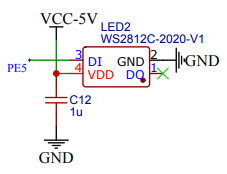
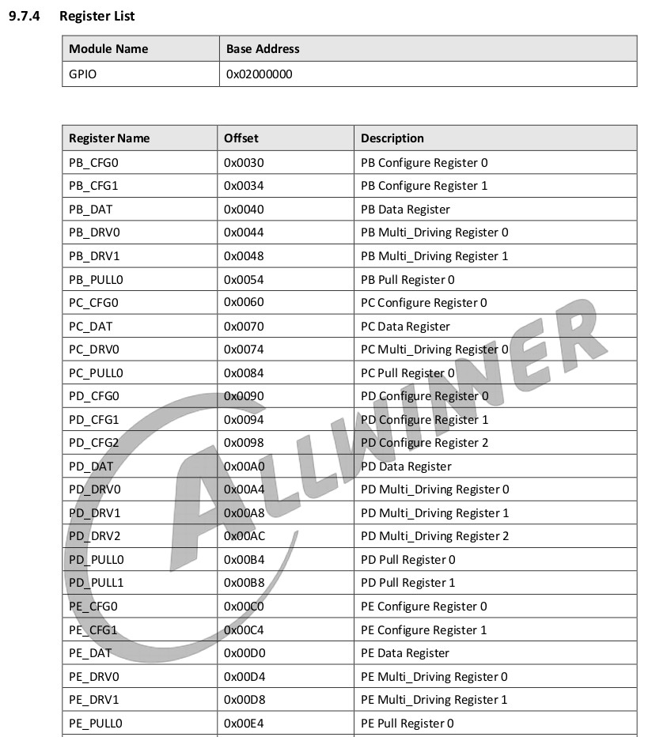
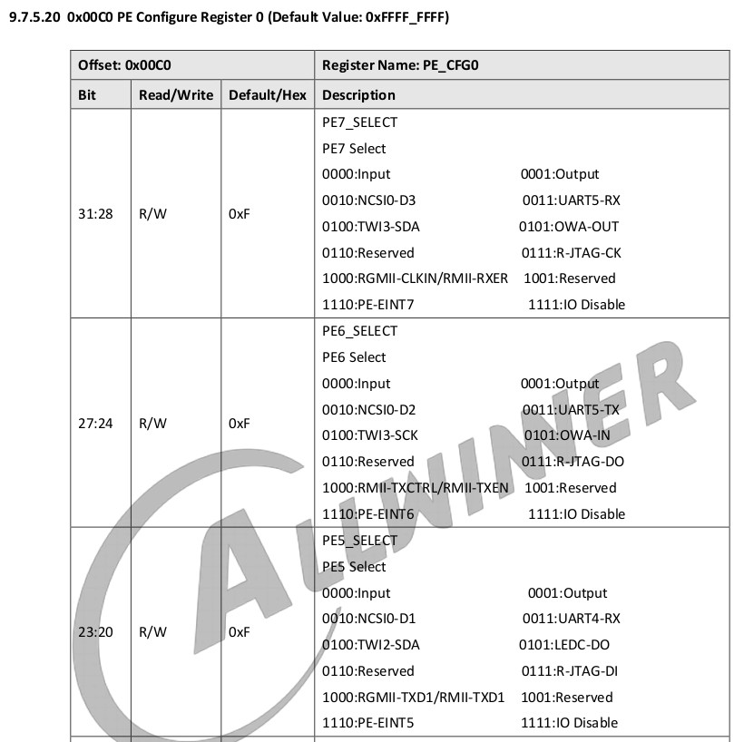
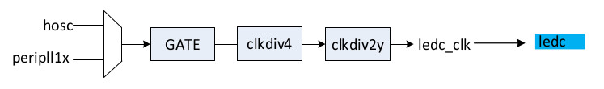
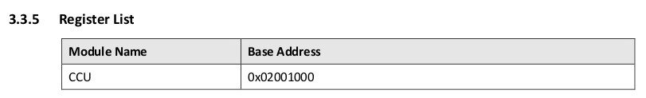
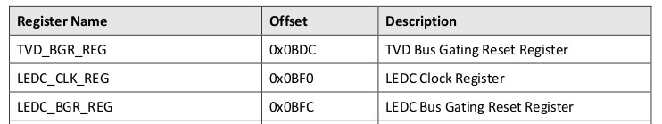
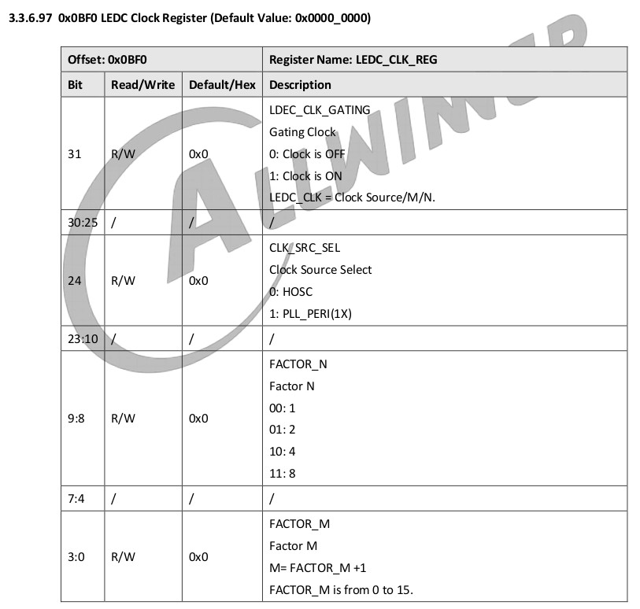
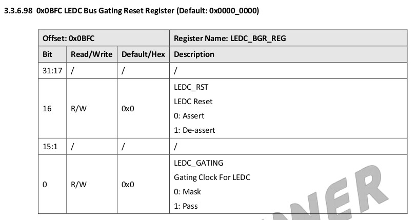
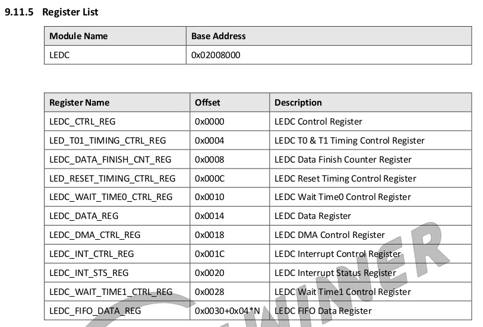

參考資訊：
https://en.wikipedia.org/wiki/Delay_slot
https://github.com/Ouyancheng/FlatHeadBro
https://datasheet.lcsc.com/lcsc/1810231210_Worldsemi-WS2812C_C114587.pdf
LED是連接到PE5









.global _start
.equ CCU_BASE, 0x02001000
.equ GPIO_BASE, 0x02000000
.equ LEDC_BASE, 0x02008000
.equ PE_CFG0, 0x00c0
.equ _1S, 200000000
.equ LEDC_CLK_REG, 0x0bf0
.equ LEDC_BGR_REG, 0x0bfc
.equ LEDC_CTRL_REG, 0x0000
.equ LED_T01_TIMING_CTRL_REG, 0x0004
.equ LEDC_DATA_FINISH_CNT_REG, 0x0008
.equ LED_RESET_TIMING_CTRL_REG, 0x000c
.equ LEDC_WAIT_TIME0_CTRL_REG, 0x0010
.equ LEDC_DATA_REG, 0x0014
.equ LEDC_DMA_CTRL_REG, 0x0018
.equ LEDC_INT_CTRL_REG, 0x001c
.equ LEDC_INT_STS_REG, 0x0020
.equ LEDC_WAIT_TIME1_CTRL_REG, 0x0028
.text
.long 0x4000006f
.byte 'e','G','O','N','.','B','T','0'
.long 0x5F0A6C39
.long 0x8000
.long 0, 0
.long 0, 0, 0, 0, 0, 0, 0, 0
.long 0, 0, 0, 0, 0, 0, 0, 0
.org 0x0400
_start:
li t0, (1 << 16) | (1 << 0)
li a0, CCU_BASE + LEDC_BGR_REG
sw t0, 0(a0)
li t0, (1 << 31)
li a0, CCU_BASE + LEDC_CLK_REG
sw t0, 0(a0)
li t0, 0x500000
li a0, GPIO_BASE + PE_CFG0
sw t0, 0(a0)
li t0, (0x14 << 21) | (0x06 << 16) | (0x07 << 6) | (0x13 << 0)
li a0, LEDC_BASE + LED_T01_TIMING_CTRL_REG
sw t0, 0(a0)
li t0, (0x1d4c << 16)
li a0, LEDC_BASE + LEDC_DATA_FINISH_CNT_REG
sw t0, 0(a0)
li t0, (0x1d4c << 16)
li a0, LEDC_BASE + LED_RESET_TIMING_CTRL_REG
sw t0, 0(a0)
li t0, (0xff << 0)
li a0, LEDC_BASE + LEDC_WAIT_TIME0_CTRL_REG
sw t0, 0(a0)
li t0, 0
li a0, LEDC_BASE + LEDC_DMA_CTRL_REG
sw t0, 0(a0)
li t0, 0
li a0, LEDC_BASE + LEDC_INT_CTRL_REG
sw t0, 0(a0)
li t1, 0
li t2, (1 << 12)
0:
li t0, (1 << 16) | (1 << 5) | (1 << 4) | (1 << 3) | (1 << 2) | (1 << 0)
li a0, LEDC_BASE + LEDC_CTRL_REG
sw t0, 0(a0)
xor t1, t1, t2
li a0, LEDC_BASE + LEDC_DATA_REG
sw t1, 0(a0)
1:
li a0, LEDC_BASE + LEDC_INT_STS_REG
lw t0, 0(a0)
and t0, t0, 1
beqz t0, 1b
sw t0, 0(a0)
li t0, _1S
jal delay
j 0b
delay:
addi t0, t0, -1
bgtz t0, delay
jr ra
.end
完成